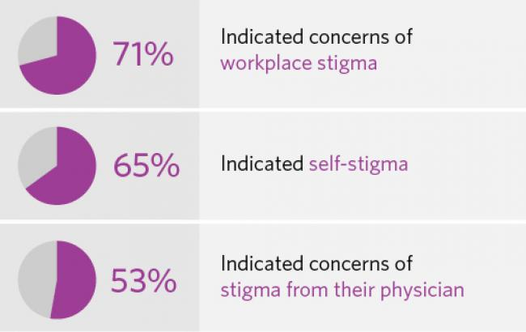

Due to the lack of mental health education and the portrayal of mentally ill people in media, society's image of what a mentally ill person looks like is flawed. Many people consider those with a mental illness to be criminals or dangerous. Mental illnesses aren't viewed as serious medical conditions, but as a personal weakness which reveals desperation or laziness. This is stigma- an idea of disgrace and shame placed around an idea or thing. The stigma around mental illness has been around for centuries, but the time has come for it to end. And why? Well, because every day that stigma persists in the world is another day that someone is afraid to reach out for help. Another day of productivity, happiness, and human experience lost. By educating ourselves about the truth of mental illness and destroying ingrained stereotypes, we can move towards a more peaceful, happy, and productive world.
A Canadian survey regarding mental health in the workplace found these results.